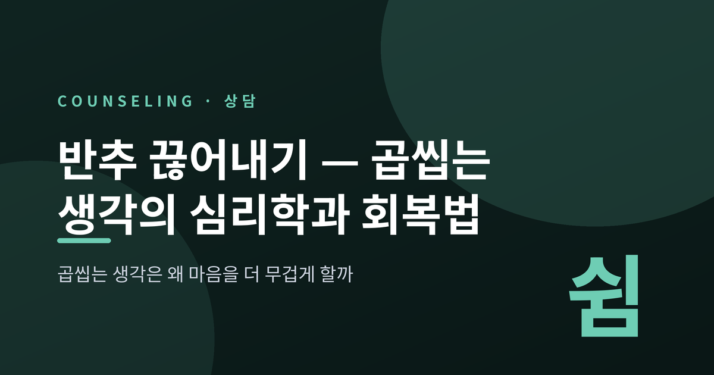
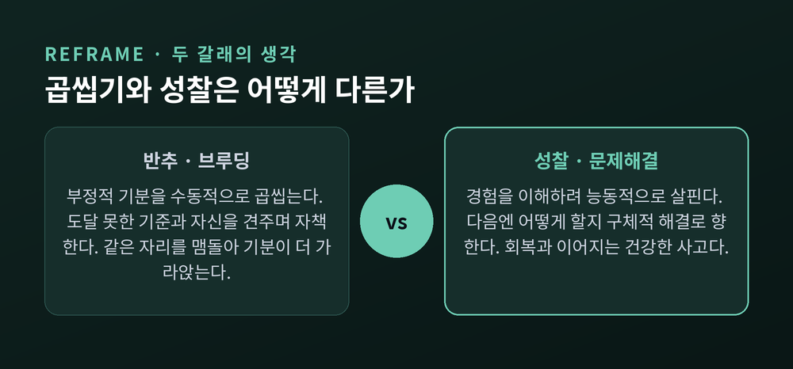
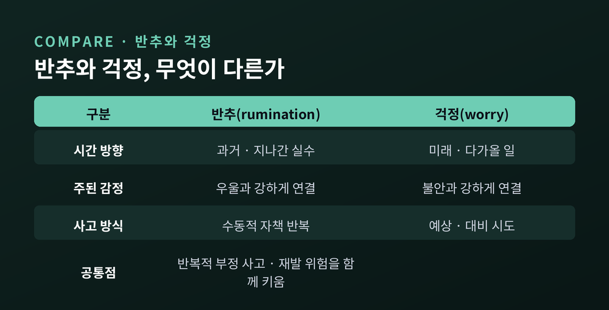
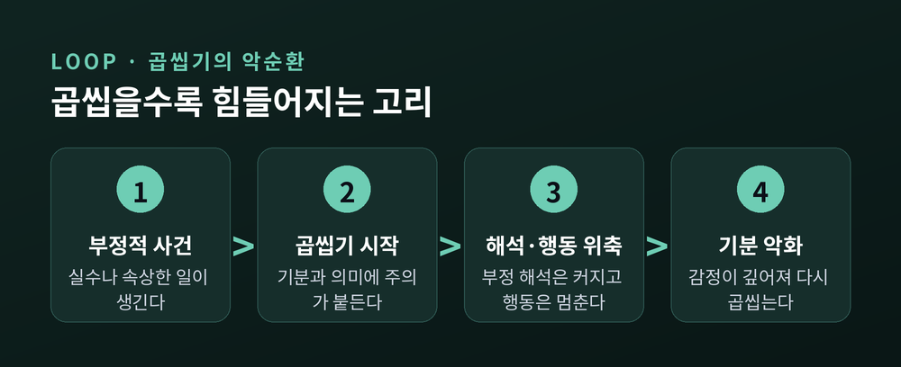
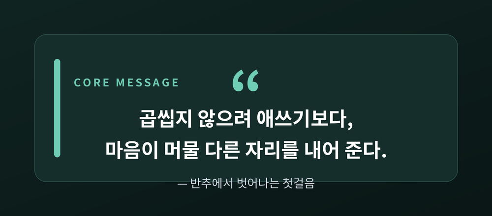
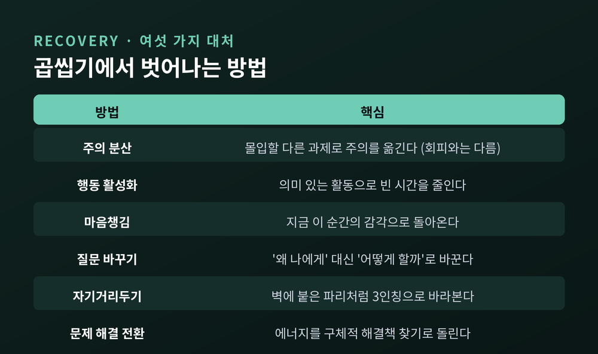

반추 끊어내기 — 곱씹는 생각의 심리학과 회복법 6가지

이번 글에서는 지나간 일을 자꾸 곱씹게 되는 마음, 곧 반추(rumination)를 정리해 보겠습니다.
먼저 결론부터 말씀드립니다. 곱씹는 생각은 문제를 푸는 과정처럼 느껴지지만, 실제로는 부정적 감정을 더 오래 붙들어 두는 습관에 가깝습니다.
왜 그런지, 그리고 어떻게 빠져나올 수 있는지를 심리학 연구에 기대어 짚어 보려 합니다.
■ 반추란 무엇인가 — 성찰과는 다릅니다
반추는 자신의 부정적 기분에 대해 그 원인과 결과, 증상을 반복해서 곱씹는 사고를 말합니다.
심리학자 노렌-혹스마의 반응양식 이론이 제시한 개념입니다.
핵심은 '수동성'입니다. 문제를 풀려는 능동적 시도가 아니라, 기분과 그 의미에 주의가 붙들려 같은 자리를 맴도는 것입니다.
여기서 한 가지를 분명히 해 둘 필요가 있습니다.
곱씹는 것이 곧 성찰은 아닙니다.
성찰(reflection)은 자신의 경험을 이해하려는, 한결 건강한 사고입니다.
반면 반추는 부정적 정서에 반복적으로 몰두하는 쪽에 가깝습니다.
연구자 트레이너는 반추를 두 갈래로 나눕니다.
하나는 '브루딩(brooding)'입니다. 지금의 나를 도달하지 못한 기준과 수동적으로 견주며 자책하는 방식입니다. 우울과 꾸준히 맞물립니다.
다른 하나는 '성찰적 숙고'입니다. 증상을 덜기 위해 문제 해결로 향하는 사고이며, 상대적으로 건강합니다.

그러니 "생각이 많다"는 것 자체가 문제는 아닙니다.
어떤 방식으로 곱씹느냐가 갈림길입니다.
수동적 자기비난은 마음을 더 무겁게 하고, 구체적 해결로 향하는 사고는 회복을 돕습니다.
■ 반추와 걱정은 어떻게 다른가
곱씹기와 걱정은 닮은 듯 다릅니다.
반추는 대체로 과거를 향합니다. 지나간 실수와 실패를 되감습니다.
걱정(worry)은 미래를 향합니다. 아직 오지 않은 불확실한 일을 미리 대비하려는 시도입니다.
연결되는 증상도 조금 다릅니다.
걱정은 주로 불안과, 자책성 반추는 주로 우울과 더 강하게 이어진다고 보고됩니다.
다만 둘 다 '반복적 부정 사고'라는 한 지붕 아래 있습니다.
그래서 발병과 악화, 재발의 위험을 함께 키우고, 비슷한 대처법을 공유하기도 합니다.

■ 왜 곱씹을수록 더 힘들어질까
반추가 곤란한 이유는 단순한 증상이 아니라 유지 장치로 작동하기 때문입니다.
연구들은 대략 다음 경로를 지목합니다.
첫째, 부정적 해석을 키웁니다. 기분에 초점을 맞출수록 '내 탓'이라는 왜곡과 어두운 미래 기대가 강해집니다.
둘째, 도움이 될 행동에서 주의를 앗아 갑니다. 기분의 의미를 파고드는 사이, 정작 필요한 문제 해결은 뒤로 밀립니다.
셋째, 문제 해결력 자체를 떨어뜨립니다. 머릿속은 분주한데 손발은 멈춰 있는 상태가 이어집니다.
넷째, 주변의 지지를 서서히 갉아먹습니다. 반복되는 하소연은 관계를 지치게 합니다.
다섯째, 회복을 더디게 만듭니다. 표적을 정하지 못한 곱씹기는 치료 반응까지 떨어뜨린다고 보고됩니다.
곱씹기가 위험한 진짜 이유가 여기 있습니다.
그것은 "지금 문제를 풀고 있다"는 착각을 주기 때문입니다.
그 착각 때문에 우리는 덫에 오래 머뭅니다.
예전에는 곱씹으면 답이 나올 줄 알았습니다.
지금은 압니다 — 곱씹을수록 감정은 더 깊고 오래 남는다는 것을.

■ 곱씹는 뇌 — 디폴트모드네트워크
흥미롭게도 반추는 뇌의 활동 패턴과도 맞닿아 있습니다.
디폴트모드네트워크(DMN)라는 연결망이 있습니다.
특별한 과제 없이 쉴 때, 그리고 '나'에 관해 생각할 때 활발해지는 뇌 영역들입니다.
여러 연구는 이 자기참조적 활동과 반추가 밀접하다고 봅니다.
DMN이 반추를 떠받치는 핵심 네트워크로 지목되기도 합니다.
곱씹기가 단지 의지의 문제가 아니라, 뇌가 익힌 습관의 결이라는 뜻이기도 합니다.
한 가지 단서가 여기서 나옵니다.
자신을 한 발 떨어져 바라보는 '자기거리두기'를 하면, 고통을 곱씹을 때 켜지던 자기참조 영역의 활동이 줄었다는 보고가 있습니다.
거리를 두는 시선이 뇌 수준에서도 곱씹기를 누그러뜨린다는 이야기입니다.
그러니 스스로를 너무 다그치지 않으셨으면 합니다.
"의지가 약해서"가 아니라, 뇌가 익힌 길을 따라 생각이 흐르는 것뿐입니다.
길은 다시 낼 수 있습니다. 습관이 그렇듯 말입니다.

■ 곱씹기에서 벗어나는 여섯 가지 방법
여기서부터가 실전입니다.
여러 실험과 임상 연구가 지지하는 대처를 모았습니다.
한 번에 다 하려 하지 마시고, 오늘 하나만 골라 보시길 권합니다.

하나, 주의 분산입니다. 단, 회피와는 다릅니다.
대안이 무의미한 반복 루프일 때, 몰입할 수 있는 다른 과제로 주의를 옮기는 것은 도피가 아닙니다.
곱씹기가 쓰던 정신의 대역폭을 다른 데로 돌리는 일입니다.
둘, 행동 활성화입니다.
의미 있는 활동으로 하루를 채우면, 반추가 파고들 빈 시간 자체가 줄어듭니다.
잠들기 전 침대에서 지난 대화를 되감는 습관은, 대개 그 '빈 시간'을 먹고 자랍니다.
셋, 마음챙김입니다.
지금 이 순간의 감각으로 돌아오는 연습입니다.
마음챙김 기반 개입이 반추적 사고를 줄인다는 것은 무작위 대조 연구들의 메타분석으로 뒷받침됩니다.
넷, '왜?'에서 '어떻게?'로 바꾸기입니다.
"왜 하필 나에게"라는 추상적 물음은 곱씹기를 부릅니다.
"그럼 어떻게 해 볼까"라는 구체적 물음은 문제 해결로 이어집니다.
반추초점 인지행동치료가 강조하는 전환이며, 사건의 구체적 장면과 과정에 초점을 맞추도록 훈련합니다.
다섯, 자기거리두기입니다.
지나간 일을 '벽에 붙은 파리'처럼 3인칭 시점으로 되돌아보는 방법입니다.
마치 다른 사람의 일을 보듯 한 걸음 물러서면, 감정의 소용돌이에서 조금 빠져나올 수 있습니다.
여섯, 문제 해결로의 전환입니다.
곱씹기에 쓰이던 에너지를 구체적 해결책 찾기로 돌리는 것입니다.
문제 해결에 관여할수록 반추는 줄어듭니다.
바로 이 지점에서 건강한 성찰과 해로운 곱씹기가 갈립니다.
물론 이 방법들이 만능은 아닙니다.
습관을 바꾸는 데에는 시간이 들고, 어떤 날은 아무것도 통하지 않는 것처럼 느껴지기도 합니다.
그래도 방향은 분명합니다 — 곱씹지 말라고 억누르기보다, 주의를 둘 다른 자리를 마련해 주는 것입니다.
정리하면 이렇습니다.
반추는 문제를 푸는 사고처럼 위장하지만, 실은 감정을 오래 붙드는 습관입니다.
그리고 습관은 바꿀 수 있습니다.
"곱씹지 않으려 애쓰기보다, 마음이 머물 다른 자리를 내어 준다."